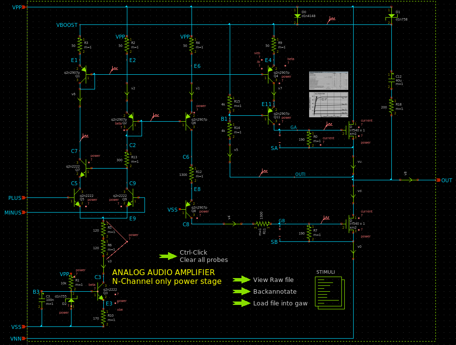
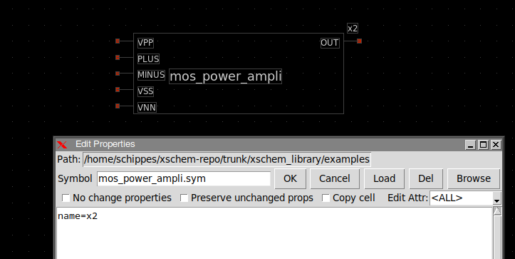
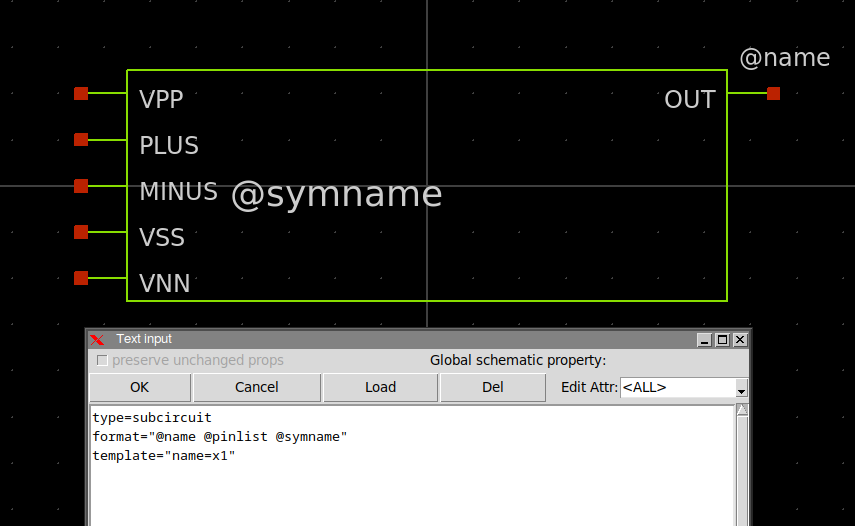
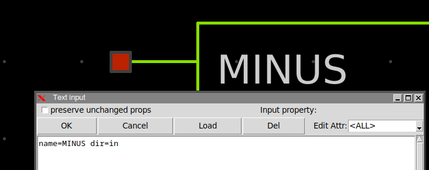
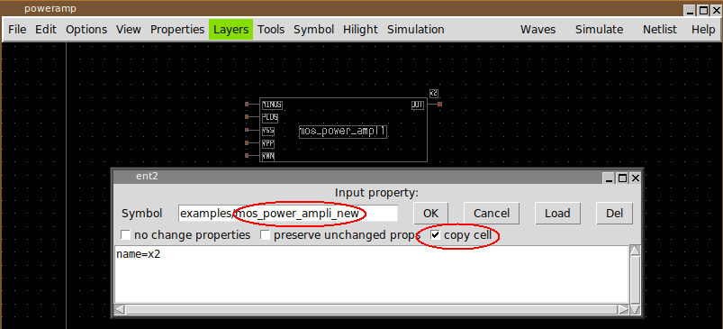
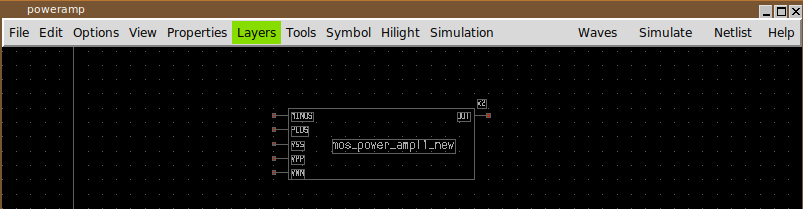

CREATING SYMBOLS
Creating a subcircuit symbol
Suppose you have just finished creating a circuit and you now want to create a symbol for it so you can use this circuit as a sub block in other schematics:

Above schematic contains VPP, PLUS, MINUS,
VSS, VNN input pins and OUT output pin.
If you press the a key xschem will generate a symbol automatically.
If your schematic is called mos_power_amplifier.sch the symbol will be saved
in the same place as the schematic and named mos_power_amplifier.sym.
If you open a new empty schematic and use the Insert or Shift-I key
to insert a symbol and select the mos_power_amplifier.sym you get this:
If you select the symbol instance and press q you see the instance name attribute; the name attribute specifies an unique name in current schematic. There can not be two x2 instances in a schematic. If you copy the placed instance to get two of them the new one will be automatically renamed (to x3 or x1, or any available unique name).
If you descend into the symbol and press q you see the following attributes:
type=subcircuit format="@name @pinlist @symname" template="name=x1"
These attributes are using by xschem to generate the subcircuit netlist line. the format
attribute tells xschem that a line containing the instance name (@name, replaced by
x2), the list of attached nets
(@pinlist, replaced by the nets attached to the symbol i/o ports in the
order they are declared in the subcircuit)
and the symbol name (@symname, replaced by mos_power_amplifier).
The type attribute tells xschem that the symbol is a subcircuit (not a terminal symbol)
and netlister should further descend into the corresponding schematic to complete the netlist.
The template attribute defines default values for attributes when the symbol is
placed in a schematic. For example if you place an instance of this symbol in an empty schematic
the instance name attribute will be set to x1. If there is already an
x1 instance xschem will automatically rename the instance to a unique name.
You can manually edit the symbol to change its shape or change the pin ordering.
If you change the pin positions always move the pin (the red square) and the label together.
If you select one pin (the small red square box) and press 'q' you see the pin attributes:
name specifies the pin name.
dir specifies the pin direction (in, out, inout).
It is good practice to verify that the pin name attribute matches the name of the text label next to it.
If you edit the text label next to a pin the pin name attribute will be changed automatically.
Creating a new symbol and schematic by cloning
Another useful approach to create a new component (both symbol and schematic view) is to 'clone' it from a similar existing component: after copying a component to a different place in the schematic, press the edit property bindkey (q key) and set a new name for the symbol, set also the copy cell checkbox:
After pressing OK a copy (both schematic and symbol views) of the previously selected component will be created. After this clone operation modifications can be made on the newly created schematic and symbol views without affecting the original component.
for more info on symbols see the Tutorial